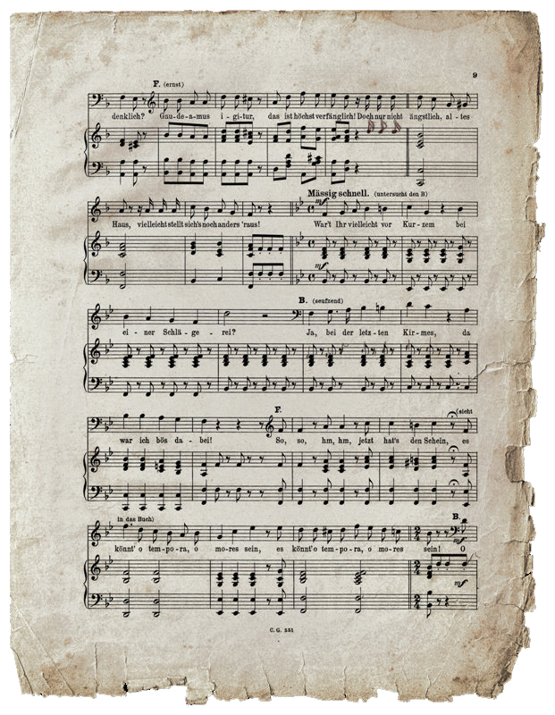

Numero 1
Aparentemente Christine está inspirada en la diva sueca Christina Nilsson.
Numero 2
Nunca se dice en la obra de Leroux pero dice que Erick era un amante de los animales ya que estos no lo juzgaban por su deformación, diciendo en una adaptación que en su niñez llego a tener una perrita.

Numero 3
Una teoría muy curiosa dice que las deformaciones de Erick eran producidas por la posibilidad de incesto de sus padres.